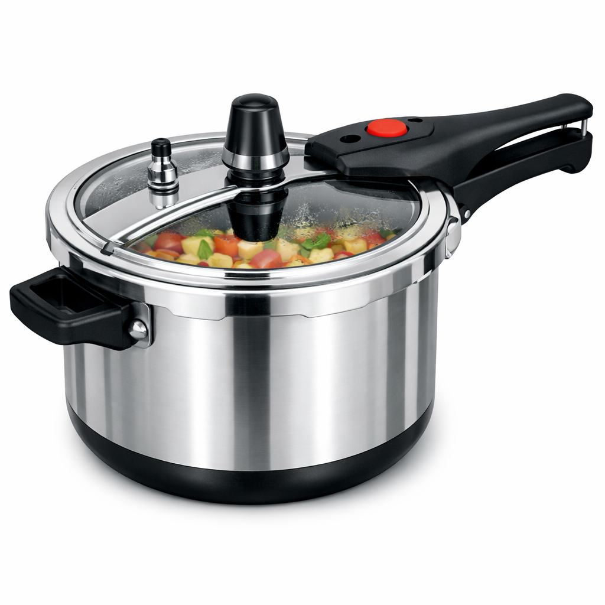

Alumínio Polido: O modelo tradicional, mais em conta e com aquecimento rápido.
Existem vàrios tipos de panelas de pressão como por exemplo:
Alumínio Polido: O modelo tradicional, mais em conta e com aquecimento rápido.

Alumínio Antiaderente: Muito fáceis de limpar, pois evitam que o alimento grude no fundo.

Aço Inox: Mais duráveis, não soltam resíduos e possuem fundo triplo, o que distribui melhor o calor.

Com Visor de Vidro: Permite acompanhar o cozimento sem precisar abrir a panela.

Panela de pressão elétrica: cozinha o dobro mais rápido, é automática, segura e fácil de limpar.
aviso: as imagens dessa página foram feitas por ia para evitar copright